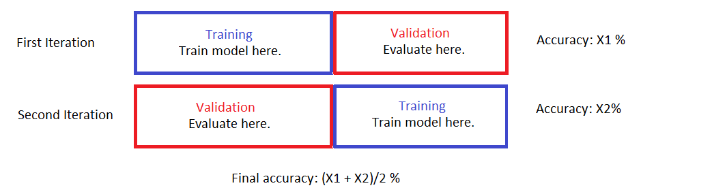
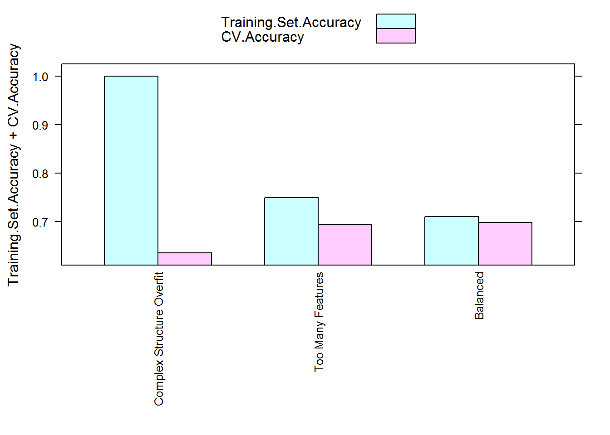

Introduction to Cross Validation
This is a continuation of my article on overfitting. If you haven’t read it, I recommend you to start there first.
As I mentioned, the biggest problem overfitting presents to a modeler is it causes us to think the model performance is better than it actually is. In this post I am going to introduce you to a resampling method that can produce accurate model performance estimation - cross validation.
Basic Idea: Keep Some Data Out of Reach
So if you recall, in the beginning of the simulation I splitted the data set into a training set and a validation set. The models were trained on the training set and they all produced inflated accuracies on those data points. However, when the models made predictions on the validation set their model accuracies all dropped significantly, particularly the ones that were overfitting. I was only able to get a sense of the real model performance by looking at the validation set accuracies and conclude that the simplest tree using the least amount of feature was in fact the best model.
This is called the “hold-out” method. A portion of the data is held out of reach of the model training process. This portion of data is only used for the models to make predictions. The performance evaluation you get by letting the model make prediction on the held-out portion of the data is an estimation of the out-of-sample performance. It’s out-of-sample because the model does not construct or tweak its structures/parameters using these datapoints. It’s an estimation because the portion of data held out is only a small subset of all the other possibilities that you would like to make a prediction on.
There is a bit of problem though.
The model you have is only built on the training data alone. The out-of-sample performance estimate you have is solely evaluated using the validation set. What if the data isn’t splitted perfectly? Let’s say we are looking at fitness data. By chance, most of the datapoints in the training set are from female participants and most of the datapoints in the validation set are from male participants. Can we still say that the model we built generalizes well to the entire population which has roughly equal amount of female and male? Can we say the performance estimation using a validation set containing only male is unbiased? The answer to both questions is of course, no!
Let’s say you measure your model performance on the validation set and want to tweak your model further. Like I mentioned last time, doing so allows information from the validation set to leak out to the training process and effectively makes your model start training on the validation set. This can cause your model to overfit on the validation set and once again produce inflated performance estimation.
Let us address point 1 first.
Cross Validation
The basic idea of cross validation is an extension of the hold out method.
Hold out a portion of the data to be the validation set. This is called a validation fold or sometimes just a fold. The rest of the data is set to be the training set. Train model on the training set and evaluate on the validation set/fold as usual.
Choose a different portion of the data to be the validation set. To ensure no information is leaking over the new fold cannot overlap with the old fold (or any other folds for that matter). The rest is the training set. Train and evaluate.
Iterate steps 1 and 2 k times. This ultimately results in k folds and k entries of performance evaluations. Their average is the out-of-sample performance estimate from k-fold cross validation.
Here’s a picture visualizing a simple 2-fold cross validation.

Notice that in the end ALL of the data points are used to train a model and ALL of them are also used for validation. The key is to recognize that
- Two models are built. Both with the same hyper-parameters but different training/validation sets.
- Whenever a datapoint is used to build a model, it is NOT used for validation of the said model. Vice versa.
- There is no overlap between the validation folds (the training sets can have overlaps although in our 2-fold case there’s no overlap there, either).
The final performance estimate is an average of the model performance evaluations on the validation folds. This is an attempt to decrease the effect of hidden structures that aren’t perfectly balanced out from the data split.
Application Example
Let’s use the simulation data and the models we had last time to demonstrate cross-validation. Here’s a reminder for what the data represents here. With cross-validation we actually don’t need to split the data into training and validation set.
# Load all required libraries.
library("caret")
library("rpart")
library("rpart.plot")
set.seed(123)
toss <- rbinom(1000, 1, 0.5)
inst <- rnorm(1000) + toss
volt <- rnorm(1000)
water <- rnorm(1000)
toss_fac <- factor(toss, labels = c("tail", "head"))
data <- data.frame(inst = inst, volt = volt, water = water, response = toss_fac)Recall that tree1 overfits the data by being structurally complex. tree2 overfits by using too many features and tree3 tries to use a relatively simple structure and only the relevant feature. I will now estimate their model performances using 10-fold cross validation instead of the actual validation set. The code below generates a vector named folds with the same size of the training data. The vector contains integers ranging from 1 to 10 randomly dispersed throughout with each integer occuring 100 times in total. What it represents is the validation fold the corresponding datapoint resides in. For example, if the 10th slot of the vector is 5, then the 10th datapoint is inside the 5th validation fold (and only the 5th).
my_createFolds <- function(data, k, seed) {
n <- nrow(data)
folds <- rep(0, n)
fold_size <- floor(n/k)
# index of data points that haven't been assigned a fold
index_left <- 1:n
for (i in 1:k) {
if (i < k) {
set.seed(seed)
selected <- sample(1:length(index_left), fold_size)
folds[index_left[selected]] <- i
index_left <- index_left[-selected]
} else {
# Last fold. Assign everything left here.
folds[index_left] <- k
}
}
return(folds)
}
folds <- my_createFolds(data, 10, 123)I will now write a function to facillitate training the three types of tree model on each of the training set. Model performance is evaluated on each of the validation fold and the final performance is the average from all 10 folds. With three types of models I have to train a total of 3*10 = 30 models.
# Function to train tree models and evaluate model performance using 10-fold
# CV
# Arguments: data: data to train the model on
# control: control objects that contains hyper-parameters for rpart.
# folds: cross validation folds. Length must be the number of rows in data.
# Returns: Model performance from each cross validation fold. Average
# returned vector to obtain final performance estimate!
tree_cv <- function(formula, data, control, folds) {
k <- max(folds)
n <- nrow(data)
index <- 1:n
accuracies <- rep(0, k)
for (i in 1:k) {
inFold <- index[folds == i]
data.infold <- data[inFold, ]
data.outside <- data[-inFold, ]
# Train model on data outside of fold, predict on data in the fold, compute
# accuracy.
set.seed(1)
model <- rpart(formula, data.outside, control = control)
pred <- predict(model, newdata = data.infold, type = "class")
accuracies[i] <- sum(pred == data.infold[, all.vars(formula)[1]])/nrow(data.infold)
}
return(accuracies)
}
# Tree 1 Hyper-parameters
treeCon.over <- rpart.control(minsplit = 2, minbucket = 1, cp = 0, xval = 10)
# Tree 2 & 3 hyper-parameters
treeCon <- rpart.control(minsplit = 10, minbucket = 3, cp = 0.01, xval = 10)
tree1_accuracies <- tree_cv(response ~ inst, data = data, treeCon.over, folds)
tree2_accuracies <- tree_cv(response ~ inst + volt + water, data = data, treeCon,
folds)
tree3_accuracies <- tree_cv(response ~ inst, data = data, treeCon, folds)Here’s a table showing the final estimated model accuracies from cross validations of the three models compared to their training set accuracies and validation set accuracies obtained last time:
| Model.Type | Training.Set.Accuracy | Validation.Set.Accuracy | CV.Accuracy |
|---|---|---|---|
| Complex Structure Overfit | 1.0000 | 0.6466 | 0.636 |
| Too Many Features | 0.7504 | 0.6591 | 0.695 |
| Balanced | 0.7105 | 0.6817 | 0.699 |
As you can see, training set accuracies are higher for all three models compared to both validation set accuracies and CV estimated accuracies. This is particularly obvious for the first model. The CV estimated accuracies are in general much closer to the model performance on the validation set and they correctly reflect the true order of performance between the three models.
You may have noticed there is a pattern for the gap between training set accuracies and their corresponding CV estimated accuracies: 
Yep, the higher amount of overfitting a model has the larger the gap is between its training set performance and CV estimated performance. This is perhaps not a surprise - during cross validation the model is always assessed using unseen data in the validation fold and the averaging step smoothes over the variation in model accuracy assessments. Thus the final assessment should be closer to the true performance and lower than the inflated performance a model has on its training set if it is overfitting. This can be used as a gauge to how much overfitting your model exhibits.
This concludes the introduction to cross validation. There are more advanced things you can do with cross-validation, such as tuning model hyper-parameters and producing accurate performance assessments at the same time using nesting and subtleties like how to choose an effective k value that I did not cover. There are also other resampling methods for producing accurate performance estimates. Some are actually considered to be superior, such as the .632 bootstrap method. They shall be left for another time.